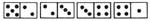
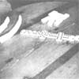
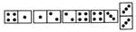
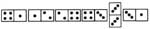
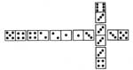

If those late-winter blues have got you down, take a tip from Susan Fries Ezell...
When the snow piles up to the attic window and every night seems six weeks long, any activity-work or play-that can be shared with someone else takes on a special importance.
And, as most MOTHER-type people know, television isn't the only way to fill a quiet evening (in fact, TV rates somewhere below the bottom in most any list of entertainment possibilities). Games, for instance, have provided men and women with amusement-and a means of communication- for centuries ... and dominoes is one of the oldest table games around.
Although nearly everybody discovered and discarded some type of domino game as a child, the speckled rectangles (called "bones" in domino lingo) can be used in some intricate and challenging contests. And a good domino game-no matter how complex-will never be so involved that it gets in the way of conversation. What more could you ask of a game?
Most any toy shop (and many department-type stores) carries domino games. The prices of these can range from about $2.00-for a basic set of wooden bonesup to a king's ransom for the hand-tooled outfits made of ivory. Most of the latter are unnecessarily fancy, but don't automatically eliminate the slightly more expensive dominoes when you go out to buy. The texture and weight of the playthings-and the tiny "click" you hear as each piece is played-are intrinsic to the mood of the game.
Domino sets are available in three varieties: double-six, double-nine, and double-twelve. These names indicate the maximum number of dots on one bone. The double-six set, with 28 pieces, is standard ... but the larger games can make much of your playing more exciting. Start out with a cheap box of sixes, and then-once you're hooked-you'll be ready for the big ones.
Muggins is a good beginner's domino game (those who want to get adventurous should find a copy of The Domino Book by Fredrick Berndt, $5.95 in hard cover from Thomas Nelson, Inc.).
In fact, most people who've been exposed to the spotted blocks have encountered muggins in one of its many variations. However, few people today have tried the "formal" rules ... which make up muggins as our grandparents might have played it.
The difference between simple dominoes and all-out five-point shows up in the scoring. Though you do play by matching the number of dots (also called "pips") on a side of one of your bones to those on a domino already at an end of the "line of play" (the arrangement-on the playing table-of those pieces already set down), you can only make points when the sum of the pips on the outside ends of the series adds up to a multiple of five.
Thus in this line of play:
the last player has scored (three plus two) five points, while here:
there is no score because the two ends, added together, make six. Accumulated points are recorded using an elegant system of big and little X ... with each slanted stroke equaling five and a completed figure representing fifty:
Five completed patterns (250 points) end a game.
Play begins with all of the dominoes face down on the playing surface. Each contestant draws one, and the person holding the highest number of spots will begin the hand.
Once the bones used to determine the order of play have been returned to that group sitting spots-down on the table (this central store of dominoes is called a "bone pile"), the chosen player draws seven ... after which his opponent does the same (muggins is usually a two-person game, though four can play a short version if they limit the draw to five pieces each).
The opening player starts the game by leading any domino in his hand (a six-four, two-three, or the like is a good first play, as it does-since the sum of both ends is a multiple of five-score points). Either side of this first bone is then available for the other gamester to work from. Any time a player can't match one of the ends of the line of play he may draw up to two from the bone pile ... and then play-if he can-or pass. (If a contestant is able to lay a domino down, he must do it ... sandbagging is definitely not allowed.)
The dominoes form a straight line until the first doublet-a piece with the same number of pips on each end-is played. This double is set at right angles to the line of play, and both sides of it count toward any possible score. Like this:
The doublet on the right has a value of six, so the player scores six plus four, or 10 points. The first double on the board-and only the first-can then be played upon from both ends and from the middle. The game proceeds in a straight line first, and the cross piece no longer counts until its ends are brought into play. This move scores five points:
But, after one or both ends of the doublet have been brought into the game, suddenly there are three or four numbers to add up as possible points ... and bigger scores to be made, like this:
WOW! A whopping 20 points.
Any other doublets are played perpendicularly, as was the first, and have both ends counted for score until their centers have been played upon ... but these latecomers don't open up new lines of play. That could get too blamed confusing!
When one contestant empties his hand, or when the bone pile has been used and neither hand can play, the game is over.
Whichever player has the fewest total pips in front of him at the end of a match is awarded the difference between that number and the number of dots held by his opponent ... rounded off to the nearest five.
That's all there is to muggins. Give it a try, but remember ... pocket computers are frowned upon by real domino folks!
|
|
|
 |
|
|
 |
 |
|
 |
 |
|